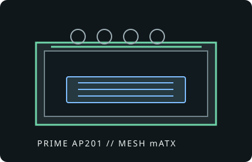

[ IDENTIFIED ENCLOSURE // COMPACT MICROATX MESH ]
ASUS Prime AP201
460 × 205 × 350 mm (H × W × D), approximately 33 L; compact mesh enclosure for Micro-ATX or Mini-ITX systems.

VARIANT / ARCHIVAL CAVEAT: AP201 mesh and tempered-glass editions use a compact microATX layout. Check the exact board, PSU length, radiator placement and GPU length together; the category’s small-form-factor designation is relative to ordinary ATX towers.
Mechanical specifications and fit
| Catalog identity | ASUS Prime AP201 MicroATX Case (mesh or tempered-glass side-panel edition). |
|---|---|
| Dimensions / board | 460 × 205 × 350 mm (H × W × D); supports Micro-ATX and Mini-ITX motherboards. |
| GPU / cooler | GPU length up to 338 mm; CPU cooler height up to 170 mm. Verify PSU length and cable routing against long graphics cards. |
| Radiator / fans | Top supports radiators up to 360 mm; rear supports 120 mm. Fan placements and radiator thickness may conflict with board heatsinks or memory, so confirm dimensions for the exact board. |
| PSU / bays | Standard ATX power supply; maximum length ranges roughly 140–180 mm with GPU/radiator layout. Up to three 2.5-inch drives or a mixed arrangement including one 3.5-inch drive, depending on mounting bracket positions. |
| Revision / identification | Identify mesh versus glass SKU and accessory set; removable mounting brackets allow layout changes but are not independent extra space. |
Compatibility notes
The AP201 offers microATX capability with tower-class cooling in a relatively compact footprint. A 360 mm top radiator is supported, but radiator depth, fan thickness, motherboard VRM heatsinks and DIMM height must all be considered. Long GPU and PSU combinations can compete for front clearance; ASUS lists PSU length dependent on the selected graphics card and cooling assembly.
- Use the manufacturer's layout diagram to determine the PSU mount position for a long GPU.
- Check 360 mm radiator screw/fan stack against motherboard heatsinks and memory.
- Confirm drive bracket, PSU cable and GPU power-connector fit before finalizing storage.
Manufacturer specifications and manual
- ASUS Prime AP201 official product pageManufacturer overview and product-family information.
- ASUS Prime AP201 technical specificationsOfficial fit, material and dimensional specifications.